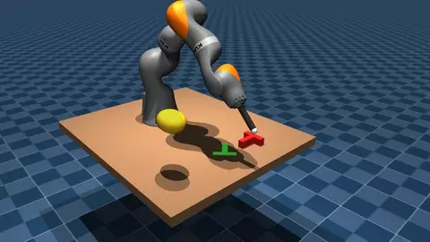
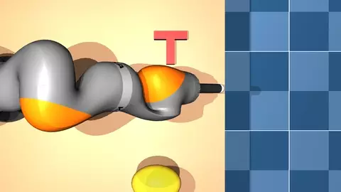
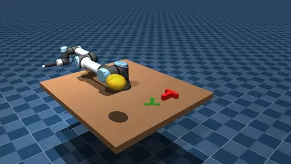
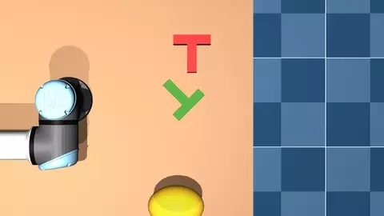

LiRA: Lightweight Reactive Arm Control
A control layer that lets a pretrained diffusion policy drive different robot arms while avoiding self-collision, the table and moving obstacles.




Problem
Learned policies such as Diffusion Policy output where the end-effector should go, but they know nothing about the arm that has to get it there: its joint limits, its own links, the table, or an obstacle entering the workspace. Running them directly on a robot arm is unsafe.
Approach
LiRA sits between the policy and the robot. It plans once offline and then reacts live:
- Planning. A joint-space trajectory planner in two variants: gradient descent, and a TrajOpt-style trust-region SQP that treats collision as a hard constraint through an exact L1 penalty.
- Stable velocity field. The planned path becomes a globally exponentially stable velocity field, using a Lyapunov function fitted to each path with a small LP (milliseconds per plan), in the spirit of LPV-DS but without a GMM or SDP.
- Safety filter. A CBF-QP running at 500 Hz on capsule and box clearances, with a task-space metric so the filter prefers motions the task does not care about.
- Robot-agnostic. The core runs on any arm MuJoCo can load. Adding a robot only needs a scene file and one config entry.
Result
A KUKA iiwa14 and a UR5e play Push-T in MuJoCo with the original Diffusion Policy checkpoint, used as is with no retraining. Each run starts with the arm away from the table, so SQP first plans a path into the workspace, then the policy takes over. Policy inference runs in a background thread, as it would on a real robot, and its actions go through a dynamical-system controller that follows the policy while moving the arm out of the way of an obstacle.
The robot only knows where the obstacle is right now, not where it is heading, so all of the dodging is purely reactive. The demo is not vision-based yet: the pose of the T comes straight from the simulator rather than being estimated from a camera.